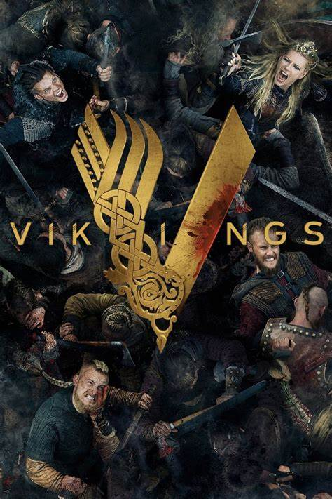
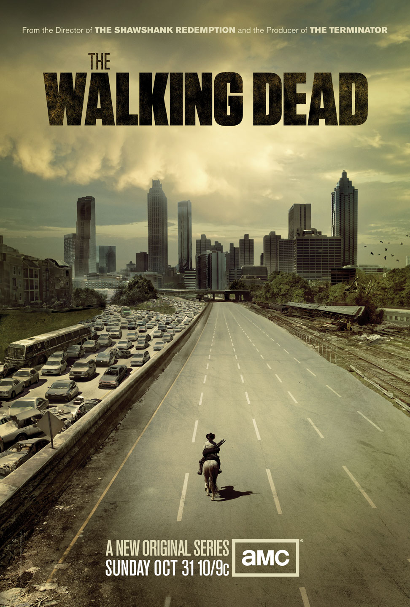
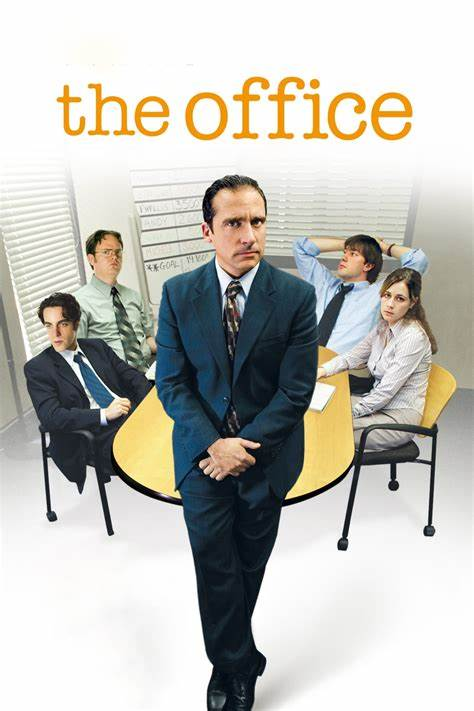
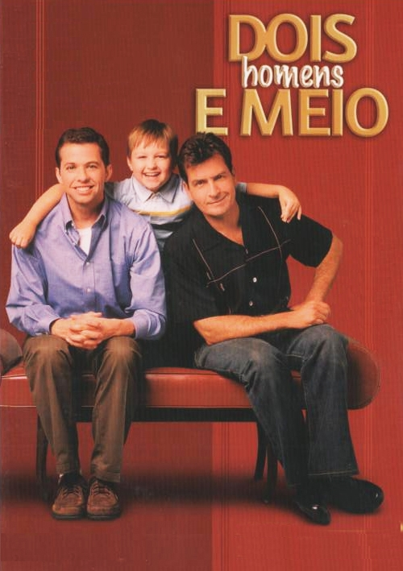

Séries que gostaria de esquecer para assistir novamente
- VIKINGS 
- Vikings gira em torno de Ragnar Lothbrok, um nórdico agricultor que se arrisca indo para as terras do oeste, onde nenhum outro viking jamais pisara e assim conquistando cada vez mais prestígio. A série conta com bastante aspectos históricos da Idade Média, mostra os costumes transmitidos por tradição oral, bem como os aspectos religiosos, principalmente com o uso da mitologia nórdica. O próprio protagonista acredita ser descendente do deus Odin. Tudo isso em contrapartida dos costumes e religião europeia.
- PRISON BREAK
- Após a prisão de Lincoln Burrows (Dominic Purcell), condenado por um crime que não cometeu, o engenheiro Michael Scofield (Wentworth Miller) bola um plano para tirar o irmão da cadeia. Enviado para Fox River ao lado de Lincoln, Michael começa a executar a sua estratégia, mas logo percebe que está no meio de uma perigosa conspiração. Para garantir a liberdade da sua família, ele precisará enganar a Dra. Sara Tancredi (Sarah Wayne Callies) e se associar a criminosos condenados, como Fernando Sucre (Amaury Nolasco), Theodore 'T-Bag' Bagwell (Robert Knepper) e John Abruzzi (Peter Stormare).
- THE WALKING DEAD 
- Em The Walking Dead, depois de ser baleado e passar meses em coma, o xerife Rick Grimes (Andrew Lincolm) acorda sozinho em um hospital deserto. Para sua surpresa, o mundo como conhecia deixou de existir depois que um perigoso vírus provoca uma infestação de zumbis na cidade de Cynthiana, em Kentucky, nos Estados Unidos. Desesperado, Rick enfrenta a estranha ameaça na expectativa de reencontrar a mulher Lori (Sarah Wayne Callies) e o filho Cal (Chandler Riggs). Ele decide unir-se aos homens e mulheres sobreviventes para que tenham mais força para combater o fenômeno que os atinge. O grupo percorre diferentes lugares em busca de soluções para o problema. Aos poucos, eles percebem que a infestação de mortos é maior do que pensavam, se espalhando por todo o país, e possivelmente o resto do mundo. A sociedade que conheciam já não existe mais e tudo que resta é o desejo de sobreviver. Em meio ao caos da nova ordem mundial, Rick e seus companheiros percebem que os humanos sobreviventes podem ser uma ameaça maior que os próprios zumbis. (bom até a 7 temp)
- GAME OF THRONES
- Game of Thrones conta a históra de um lugar onde uma força destruiu o equilíbrio das estações, há muito tempo. Em uma terra onde os verões podem durar vários anos e o inverno toda uma vida, as reivindicações e as forças sobrenaturais correm as portas do Reino dos Sete Reinos. A irmandade da Patrulha da Noite busca proteger o reino de cada criatura que pode vir de lá da Muralha, mas já não tem os recursos necessários para garantir a segurança de todos. Depois de um verão de dez anos, um inverno rigoroso promete chegar com um futuro mais sombrio. Enquanto isso, conspirações e rivalidades correm no jogo político pela disputa do Trono de Ferro, o símbolo do poder absoluto.
- THE OFFICE 
- The Office retrata o cotidiano de um escritório em Scranton, na Pensilvânia. Filial da empresa fictícia Dunder Mifflin, os funcionários tem como função vender o suprimento de papel fornecido pela companhia. Michael Scott (Steve Carell), gerente da franquia, é um chefe incoerente e imaturo mas que se preocupa com o bem estar de seus empregados. Assim, The Office traça um olhar cômico e honesto sobre seus personagens, destacando suas diferenças e particularidades e como isso afeta a convivência diária durante o trabalho. Embora, à princípio, não exista um laço emocional muito forte entre eles, aos poucos amizades são formadas e os funcionários da Dunder Mifflin se tornam uma espécie de segunda família. Entre as relações mais memoráveis de The Office está o casal Jim (John Krasinski), um vendedor, e Pam (Jenna Fischer), a recepcionista. Ao longo das temporadas, a adorável amizade entre os dois se transforma em um intenso amor romântico.
- DOIS HOMENS E MEIO 
- A vida de um homem rico e solteiro, Charlie (Charlie Sheen), que se aborrece quando seu irmão divorciado Alan (Jon Cryer) e seu sobrinho Jake (Angus T. Jones) acabam indo morar na sua casa em Malibu. Apesar das enormes diferenças entre os dois irmãos, eles decidem firmar uma parceria para dar um lar ao pequeno Jake.